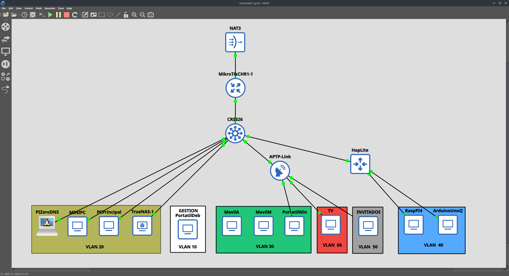
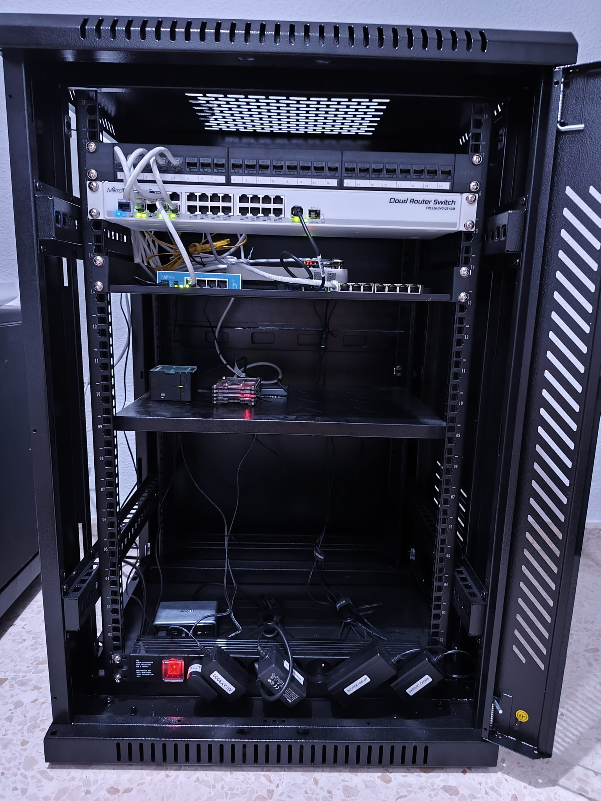
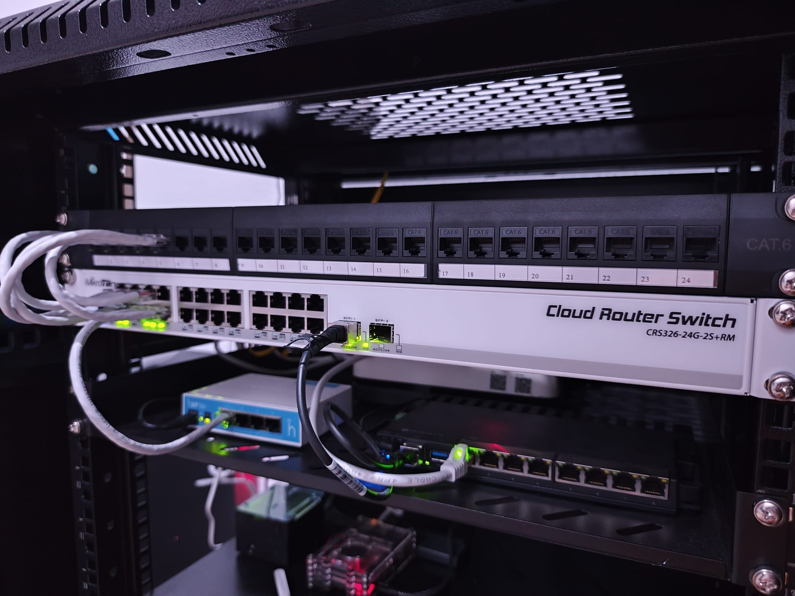
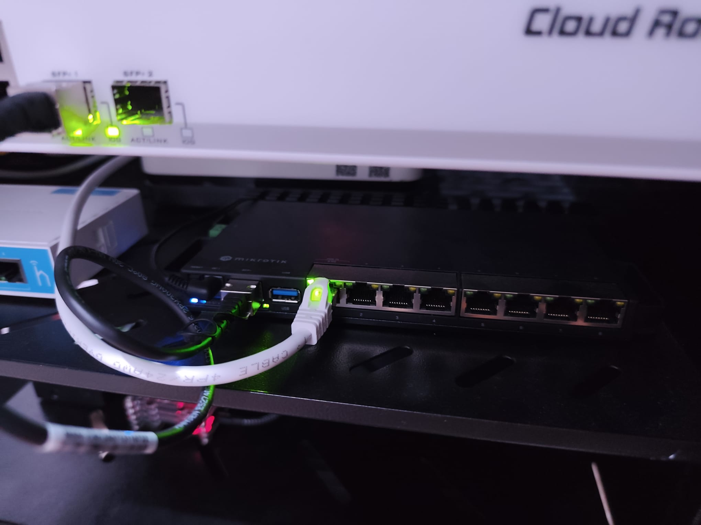
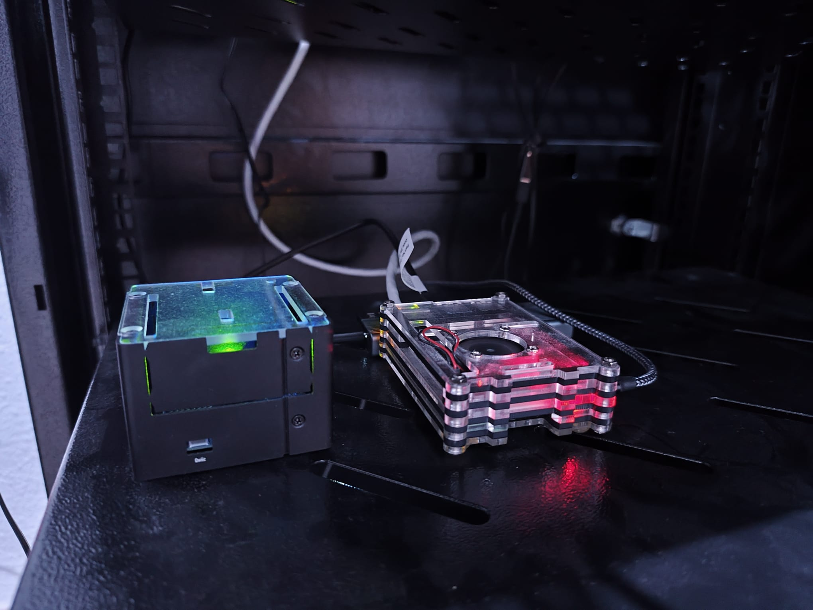
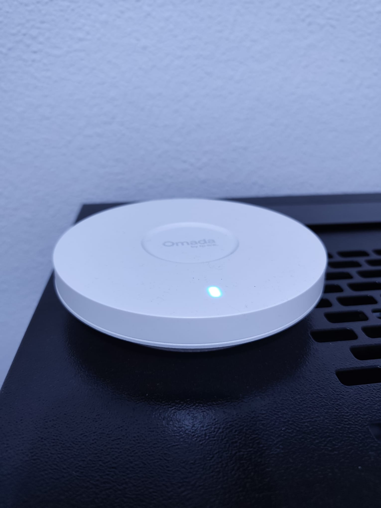
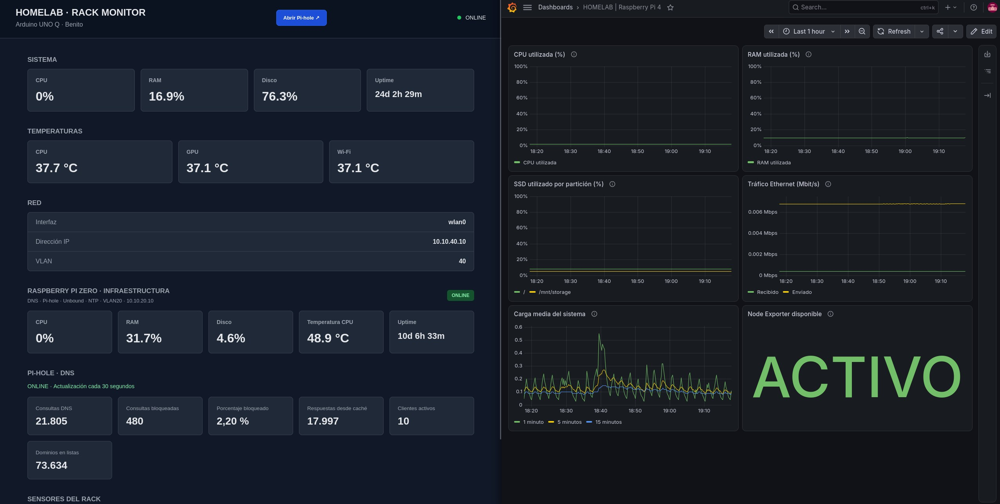

Laboratorio IT
Proyecto personal de diseño y administración de una infraestructura de redes y servidores. Lo utilizo para configurar servicios, realizar pruebas y documentar soluciones en un entorno controlado.
Arquitectura de red
La infraestructura utiliza un router MikroTik RB5009 como equipo principal y un switch CRS326 para distribuir las conexiones. La red está segmentada por funciones mediante VLAN y reglas de cortafuegos.
Internet → Router del operador → MikroTik RB5009 → Switch CRS326 → Equipos y servicios

Segmentación
| VLAN | Red | Subred | Uso |
|---|---|---|---|
| 10 | MGMT | 10.10.10.0/24 | Administración |
| 20 | SERVICES | 10.10.20.0/24 | Servicios internos |
| 30 | CLIENTS | 10.10.30.0/24 | Equipos cliente |
| 40 | LAB | 10.10.40.0/24 | Pruebas |
| 50 | IOT | 10.10.50.0/24 | Ampliación prevista |
| 60 | TV | 10.10.60.0/24 | Ampliación prevista |
| 70 | GUEST | 10.10.70.0/24 | Ampliación prevista |
Equipamiento
- Red: MikroTik RB5009, CRS326 y puntos de acceso inalámbricos.
- Servidores: Raspberry Pi para servicios de red y supervisión.
- Virtualización: máquinas Linux y Windows en KVM.
- Montaje: rack de 19 pulgadas, panel de parcheo y cableado estructurado.
Servicios y prácticas
- Redes y seguridad: VLAN, routing, NAT y reglas de cortafuegos.
- DNS y tiempo: Pi-hole, Unbound y sincronización NTP.
- Monitorización: Prometheus, Grafana y Uptime Kuma.
- Sistemas: administración Linux y Windows en entornos virtualizados.
Pendiente: VPN, DDNS y ampliación de la recogida de métricas y registros.
Fotografías
Imágenes del montaje y de los servicios del laboratorio.






Documentación técnica
Este apartado reunirá las configuraciones, decisiones de diseño y pruebas realizadas.
- Diseño de red, direccionamiento y políticas de acceso.
- Instalación y configuración de servicios.
- Monitorización y resolución de incidencias.
- Virtualización y prácticas de sistemas.
Documentación en preparación.